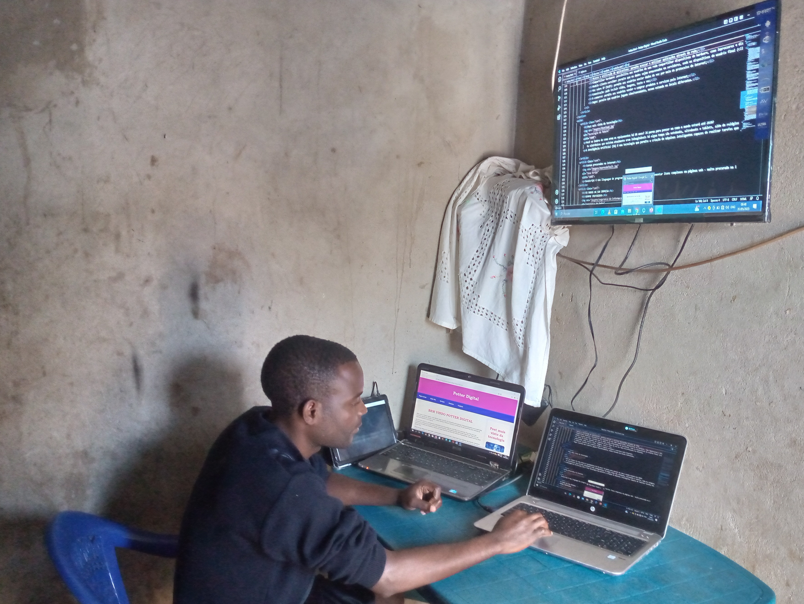

Sobre Nós
A Potter Digital, somos uma empresa líder em soluções de informática, especializada em oferecer serviços e produtos de alta qualidade para atender às demandas tecnológicas em constante evolução. Com uma história de sucesso e experiência no setor, estamos comprometidos em fornecer soluções inovadoras e confiáveis para nossos clientes.
Nossa missão é capacitar indivíduos e empresas por meio da tecnologia, permitindo-lhes alcançar seus objetivos e maximizar seu potencial. Acreditamos que a informática é uma ferramenta poderosa que impulsiona o progresso e a transformação, e estamos empenhados em fornecer as melhores soluções para atender às necessidades exclusivas de cada cliente.
Nossa equipe é formada por profissionais altamente qualificados e apaixonados por tecnologia. Desde especialistas em hardware até desenvolvedores de software, nossa equipe multidisciplinar está pronta para oferecer suporte técnico e orientação especializada em todas as áreas da informática. Continuamos aprimorando nossas habilidades e conhecimentos para estar sempre à frente das últimas tendências e tecnologias do setor.
Oferecemos uma ampla gama de serviços, incluindo:
- Assistência Técnica: Diagnosticamos e solucionamos problemas de hardware e software, garantindo que seus dispositivos funcionem perfeitamente.
- Desenvolvimento de Software: Criamos aplicativos e soluções personalizadas, alinhadas às suas necessidades específicas, desde pequenos projetos até desenvolvimento completo de software.
- Gerenciamento de Redes: Planejamos, configuramos e mantemos redes seguras e eficientes para garantir que sua infraestrutura tecnológica funcione de forma ideal.
- Consultoria em TI: Fornecemos orientação estratégica em tecnologia da informação, ajudando você a tomar decisões informadas e alinhar suas soluções com seus objetivos de negócios.
- Vendas de Equipamentos: Oferecemos uma ampla seleção de produtos de hardware de alta qualidade, desde computadores e laptops até periféricos e acessórios.
Na Potter Digital, valorizamos relacionamentos de longo prazo com nossos clientes. Buscamos entender suas necessidades específicas e trabalhar em parceria para oferecer soluções personalizadas que impulsionem o crescimento e o sucesso. Nosso compromisso com a excelência, atendimento ao cliente e suporte técnico excepcional nos diferencia como uma empresa confiável e respeitada no setor.
Seja você um indivíduo em busca de assistência técnica ou uma empresa em busca de soluções empresariais, a Potter Digital está pronta para ajudá-lo(a). Junte-se a nós em nossa busca pela inovação tecnológica e deixe-nos ajudá-lo(a) a alcançar o sucesso em um mundo digital em constante mudança.
Nossa Missão
"Nossa missão é fornecer soluções tecnológicas inovadoras e de alta qualidade que capacitam organizações e indivíduos a alcançar seu máximo potencial. Através do desenvolvimento de produtos e serviços de ponta, buscamos simplificar processos, melhorar a eficiência operacional e promover a transformação digital. Nosso compromisso é oferecer suporte abrangente e excelente atendimento ao cliente, garantindo a satisfação e o sucesso de nossos parceiros. Além disso, valorizamos a ética, a sustentabilidade e a responsabilidade social, trabalhando de forma colaborativa para impulsionar o progresso tecnológico e contribuir para um futuro melhor."
Dessiminar Conhecimento adequado em que tecnologia a aderir, prover aos seus clientes e visitante informações integrados, implementados em tecnologia de ponta e totalmente aderentes as necessidades funcionais de cada empresa, prestando serviços de suporte e manutenção de alto nível profissional, através de uma equipe de colaboradores que é constantemente motivada por valorização ao tempo efetivo na empresa, conhecimento de negócio e tecnológico, criatividade e dedicação.
Uma demostração de aulas de Administração de Redes
Visão
A Potter Digital deve estar constantemente capacitada nas tecnologias de ponta e no conhecimento dos negócios de seus clientes. O sucesso dos projetos é alcançado quando é agregado valor aos negócios do cliente.
Princípios e Valores
Não são medidos esforços para o atendimento aos clientes, suas requisição são oportunidades de conquista de confiança e manutenção do relacionamento de parceria.